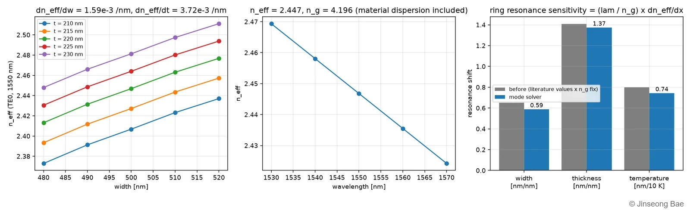
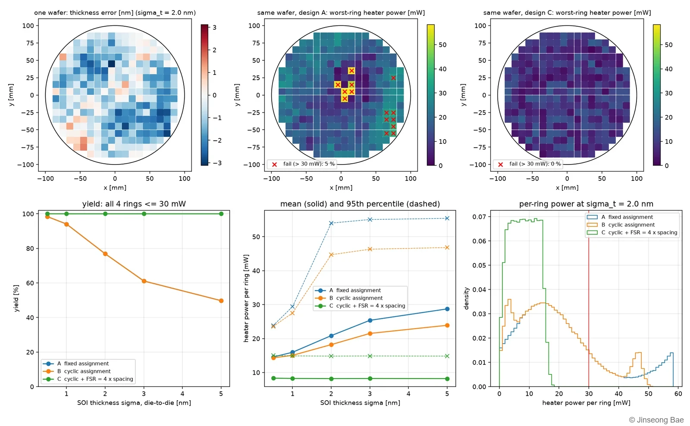
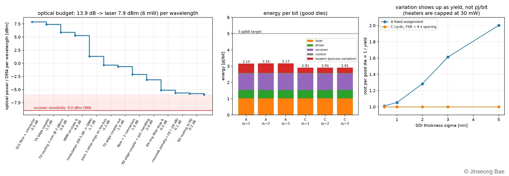

Problem and motivation
The resonance wavelength of a ring resonator shifts by nanometers when the waveguide width or silicon thickness changes by only 1 nm. So from a process point of view, the question is not "was it drawn as designed" but what percentage of dies on the wafer work, and how much heater power it takes to tune them. Aiming at a silicon photonics process engineering role, I followed this question once from the first design step to the end.
Model setup
| Waveguide | 500 × 220 nm Si strip, SiO₂ upper and lower cladding, TE0, λ 1550 nm |
|---|---|
| Refractive index | Sellmeier: Si 3.4777, SiO₂ 1.4440 (1550 nm). Thermo-optic coefficients 1.86e-4 / 1.0e-5 K⁻¹ |
| Mode analysis | MPB, 3 × 3 µm window, 64·96 px/µm. Sweeps of width 480–520 nm, thickness 210–230 nm, wavelength 1530–1570 nm, ΔT 10 K |
| Circuit | SAX: straight, Euler bend, ring coupler (Meep 2D results), 3 dB coupler, tap. Waveguide loss assumed 2.0 dB/cm |
| Process variation | Thickness σ_t 0.5–5 nm, width σ_w 2 nm. Wafer-to-wafer 30 %, radial 30 %, correlated component (correlation length 30 mm) 30 %, random per die 10 %. Ring-to-ring difference within a die 0.3 / 0.1 nm |
| Samples | 400 wafers of 200 mm, 276 dies of 10 mm each ≈ 110,000 dies |
| Heater | 4 mW/nm, cap of 30 mW per ring, red shift only, channel spacing 0.90 nm |


Pipeline
- SensitivityMPB gives n_eff, n_g and the sensitivities to width, thickness and temperature. Thickness is 2.3× more sensitive than width.
- CircuitA netlist is extracted from the gdsfactory layout, and SAX solves the MZI and the 4-channel ring add-drop bank. Drop loss 0.2–0.3 dB, crosstalk −18 / −28 dB.
- Tile and DRCubcpdk builds a 605 × 410 µm tile with process monitors (3 cutback types, width-pair MZIs, reference ring). DRC checks minimum width and spacing of 60 nm, floorplan boundary, measurement labels, and 127 µm GC pitch.
- Wafer Monte CarloFor each die, (dw, dt) is sampled, the ring resonances are computed, and the script checks whether the heaters can tune them onto the channels and at what power.
- Link budgetLosses are accumulated from the laser to the receiver, and pJ/bit is broken down.


Yield — what channel assignment changes
With thickness variation σ_t of 1 / 2 / 3 nm, fixing ring i to channel i (design A) drops the yield to 92.4 / 74.8 / 59.9 %. Because the heaters can only shift toward red, a ring that is pushed too far toward longer wavelengths cannot reach its own channel within 30 mW.
Cyclic reassignment of which ring takes which channel alone (design B) gave the same yield. Setting the FSR to 4× the channel spacing together with cyclic assignment (design C) brought the yield to 100 %. Any ring can then catch the next channel within one FSR. In this case the mean heater power per ring is 8.1–8.2 mW, and the 95th percentile is 14.7 mW.


92 % is from the first run (literature-based sensitivities); rerunning with the MPB sensitivities gives 94.1 %. The component fractions and σ values are assumptions.
Link budget
I assumed 4 wavelengths × 50 Gb/s NRZ, ring modulators (extinction ratio 5 dB, insertion loss 4 dB), receiver sensitivity −9 dBm OMA, 3 dB margin, and 12 % laser efficiency. Covering the 13.9 dB total loss requires 7.9 dBm (6.2 mW) of laser power per wavelength. The energy is 3.17 pJ/bit (design A), of which the heaters take 0.59 pJ/bit (19 %). Design C is 2.90 pJ/bit.


Measured check — public openEBL data
I did not fabricate a chip myself, but I took the measured data released from the SiEPIC openEBL 2025-05 run (L. Chrostowski et al., 2 MZI types and 17 gaps of R = 10 µm rings, 5 pm step) and fitted it with my model. Each device was normalized by its own envelope, dispersion was fixed to the model value, and split resonances (doublets) were fitted with a two-mode model.

| MZI n_g | 4.172 ± 0.002 (ΔL 251 µm, 25 troughs). ±0.01 across methods. Mode solver value 4.175 |
|---|---|
| Ring Q_i | 247,785 (range 170k–270k), loss 2.98 dB/cm |
| Coupling | Measured κ² 0.009 at gap 200 nm — the assumed 0.049 is overestimated by about 5×. κ² decay length 104 nm, critical-coupling gap about 239 nm |
| Loss | The assumption (Q_i 184,000, 4 dB/cm) is, if anything, more pessimistic than the measurement |
| Y-branch | Split ratio 0.54 : 0.46 |
Before that, I scored the extraction procedure on a virtual chip with a known answer. n_g 4.1857 vs true 4.1856, (dw, dt) = (−7.00, +3.00) nm recovered, Q_i 184,800 vs 184,400.

Limitations and non-claims
Claims
- Computed everything from mode analysis to yield and link energy in a single flow
- Confirmed with public measurements that the coupling assumption was overestimated by about 5×, and corrected it
Non-claims
- I did not fabricate or measure a chip — the measured data come from someone else's chip
- The measurements cannot pin down (dw, dt) at the nm level (method error ±0.01 n_g)
- The SAX ring is based on 2D Meep, so FSR and sensitivity are overestimated; thermal crosstalk, PAM4 and modulator variation are not included
- Tile 2 still has DRC spacing violations, and it was not submitted to openEBL
Code structure
mode/mpb_strip.py,mode/analyze.py— mode analysis and sensitivityrun_01_mzi.py,run_02_filter_bank.py— SAX circuitstapeout/die.py,tapeout/drc.py— tile layout and DRCmc/wafer_mc.py— wafer Monte Carlo (--validatecross-checks against SAX, max error 0.002 nm)link/link_budget.py— link budgetbasic/s1–s7_*.py— virtual-chip scoring and openEBL measurement analysis
Work done on 19–20 September 2026. Measured data source: SiEPIC/openEBL-2025-05.